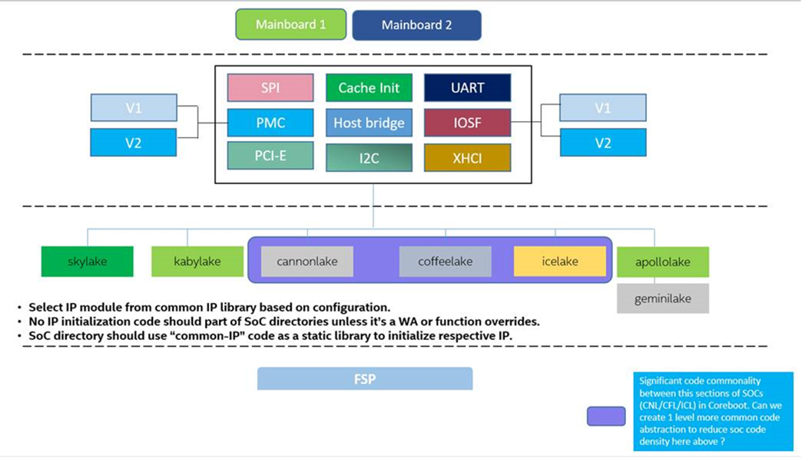

Intel common code development strategy
Introduction
This document captures the development strategy for Intel SOC code development of coreboot. As Intel keeps advancing hardware development and as new generation SoCs are developed, we need to add support for these SOCs into coreboot.
We add this support inside the “soc/intel/soc_name” folder. This folder contains all the files which are related to a particular SoC.
While there might be still duplicated code lying across SoCs, this document captures our efforts of putting as much code into shared directories across all Intel SoCs and of what can’t be put into common code due to the possibility of future changes.
Design principal
Any Intel coreboot project can be split into 3 parts:
SoC = contains all the IP/component initialization code
Mainboard = OEM/Reference boards, build based on underlying SoC support
FSP = Intel firmware support package to abstract all restricted SoC registers from the open source code.
Historically, we used to copy “X-1” generation SoC code into “X” new SoC while adding support for the new SoC. This resulted in having duplicated initialization code in both projects. This method increased redundant code across multiple SoCs and also it increased overhead for reviewers and maintainers.
To solve this issue, we started following the converged IP model. The Intel silicon team uses the same IP/controller across various Intel SoCs. For example, the LPSS based UART controller is the same across all SoC products. Thus the “converged IP model” was propsed as the new firmware development model to create a common IP library across multiple SoC products and create BIOS/firmware for future SoCs. This will make development much simpler by using those common APIs based on the different configurations.
Common Code Development and Status
Intel’s proposed “converged IP model”, also called as “common code phase 1.0”, has reduced the number of lines of code in a single SoC folder by over 50%.
We continue to analyze the code to see what can still be moved to common and try to reduce the footprint of the code in each SoC folder. With the current Intel SoC development model,the PCH has been made into a separate component for the big core SoCs. Intel hardware design has started following the model where the same PCH is used across multiple SoCs, which gives us an opportunity to make code more common across SoCs which use the same PCH. As part of this idea, common code phase 1.1 has emerged and we will try to create PCH binding for SoCs and thus further reduce the footprint of SoC code.
Common code phase 1.1 will make code more modular for big core SoCs but there is still some scope to make code flow common across small core and big core SoCs. We will take this up as a part of common code phase 2.0 and make code flow common across small core and big core SoCs which will again help us to reduce the footprint of code as well as have a more unified code flow for all Intel SoCs.
Here’s a table which summarizes common code phase and status:
|
summary |
status |
|---|---|---|
1.0 |
follow “converged IP model” as described above and create common IP code which can be used across multiple socs |
Majority of the code is common now. A few patches are in review |
1.1 |
Create PCH binding for big core SoCs. SoCs having same PCH can use common code. |
In development Base patch merged |
2.0 |
Use common stage files (bootblock, romstage) across small core and big core SoCs. This will unify flow for all Intel SoCs. |
In development |
Common code structure
Code design after common code in coreboot will look as follows:
coreboot common code structure

There will be still some duplicated files left in each SOC folder and we may copy across a SOC as a base but these files are subject to change as development continues.
Benefits
coreboot will have less redundant code which is spread across multiple SOCs as of now.
Design will be easier to understand by the community since code flow will be the same for all the Intel SoCs.
Since we are aligning the software code design with the hardware philosophy, it will be easier to map why each change was done in code/SOC.